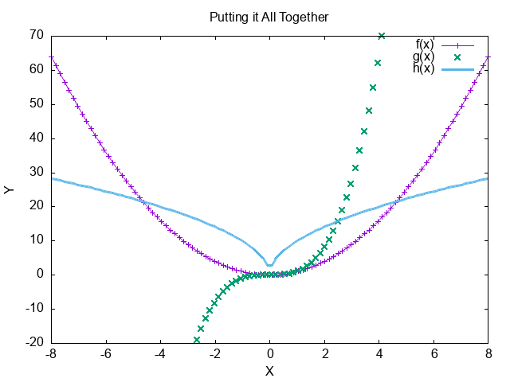

Playground
Table of Contents
- Another Heading
- Gen a 3x3 latex matrix, filled with random formulas, not too small
- Headiing2
- Gen 5x6 random org table below
- Gen 5x6 random org table below
- Gnuplot Example
- Gen random inline latex formulas below
- Generate a 5x8 latex matrix non-inlined below, filled with random numbers and letters
- Org Table Plot
Another Heading
block belongs to head
- item2
- level1
nested
def test(): print("test") print("???") test()
print("another print")
- head4
4
block inline of list item
- head5
- 5
- it
- ?
- item3
- 3
- item6
this is six-th item
print("...")
...
Gen a 3x3 latex matrix, filled with random formulas, not too small
Here is a 3x3 LaTeX matrix filled with random formulas:
\begin{bmatrix} x^2 + y^2 & \sin(\theta) & e^{\pi i} + 1 \\ \log(a + b) & \frac{c}{d} & \sqrt{n^2 + m^2} \\ \tan(x) & \int_0^1 x \, dx & \sum_{i=1}^{n} i^2 \end{bmatrix}Headiing2
special symbols: π α
This is a inline src block hello inline shell block.
This is a inline python1 inline block Inline python print output
below is a shell src block.
echo `basename $fname`
playground.org
And I can refer ’to its output like this: arg and something else’
Gen 5x6 random org table below
Here’s a 5x6 table filled with random numbers:
| 1 | 2 | 3 | 4xx | 5 | 6 |
|---|---|---|---|---|---|
| 12 | 45 | 23 | 67 | 34 | 89 |
| 68 | 29 | 51 | 74 | 16 | 83 |
| 91 | 22 | 37 | 54 | 18 | 76 |
| 10 | 60 | 33 | 48 | 25 | 92 |
| 15 | 78 | 41 | 57 | 84 | 39 |

Figure 1: reformat-org-pic1
println!("{:?}", 1..10) (print1)
1..10
In the line print1 we printed a 1.
sdfsdfj: ???
Gen 5x6 random org table below
Here’s a 5x6 random Org table:
| Col1 | Col2 | Col3 | Col4 | Col5 | Col6 | |------|------|------|------|------|------| | 42 | 17 | 35 | 88 | 65 | 22 | | 10 | 58 | 49 | 71 | 34 | 70 | | 56 | 92 | 14 | 41 | 27 | 83 | | 69 | 31 | 94 | 88 | 21 | 65 | | 84 | 50 | 19 | 95 | 37 | 45 |
You can generate a new random table by running code in Emacs or manually changing the numbers.
Run the above code in an Org buffer to generate a 5x3 random table. Adjust the generate-random-org-table function parameters as desired for different sizes.
Gnuplot Example
| x | y1 | y2 | xx |
|---|---|---|---|
| 0 | 3 | 6 | |
| 1 | 4 | 7 | |
| 2 | 5 | 8 |
reset set title "Putting it All Together" set xlabel "X" set xrange [-8:8] set xtics -8,2,8 set ylabel "Y" set yrange [-20:70] set ytics -20,10,70 f(x) = x**2 g(x) = x**3 h(x) = 10*sqrt(abs(x)) plot f(x) w lp lw 1, g(x) w p lw 2, h(x) w l lw 3

Gen random inline latex formulas below
Here are some random inline LaTeX formulas:
- \( E = mc^2 \)
- \( a^2 + b^2 = c^2 \)
- \( \int_0^{\infty} e^{-x} \, dx = 1 \)
- \( \sum_{n=1}^{\infty} \frac{1}{n^2} = \frac{\pi^2}{6} \)
- \( \frac{d}{dx}(x^n) = nx^{n-1} \)
Generate a 5x8 latex matrix non-inlined below, filled with random numbers and letters
Here is a 5x8 LaTeX matrix filled with random numbers and letters:
\begin{pmatrix} A & 3 & F & 7 & B & 9 & K & 4 \\ 2 & D & 1 & X & 8 & E & 5 & M \\ Z & 6 & Y & C & 0 & 2 & J & 3 \\ H & 4 & T & 8 & Q & 1 & L & 7 \\ N & 9 & W & 5 & P & 6 & R & 0 \\ \end{pmatrix}You can copy and paste this code into your LaTeX document to render the matrix.
Org Table Plot
| Sede | Max cites | H-index |
|---|---|---|
| Chile | 257.72 | 21.39 |
| Leeds | 165.77 | 19.68 |
| Sao Paolo | 71.00 | 11.50 |
| Stockholm | 134.19 | 14.33 |
| Morelia | 257.56 | 17.67 |
Footnotes:
A sad language.